Next: Platform specific libraries and Up: Implementation Previous: DSP-C support Contents Index
We studied the use cases and advantages of contract programming in sec:back:contact:prog. Our goals were to implement a mechanism to verify the post condition can be proven true based on precondition and verify if the caller's contract violate the callee's contracts or callee's contracts can violate the caller's contacts. For instance fig:impl:contract:funcall shows a generic pseudo code for function caller and callee with contracts. As we can see there can be two kinds of contract violations possible in 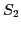. First, postcondition of a function can fail because of its own preconditions. For example, 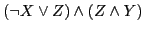 can be 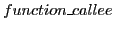 and 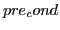 can be 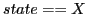, and there can be feasible path with state to be X, but does not have assignment to state variable to be Y. This will violate the postcondition based on precondition. Second, precondition of callee, 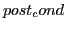, can fail because of precondition of caller 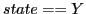. For example, callee can have precondition with and caller with , and a feasible path from precondition of caller to precondition of callee with assignment 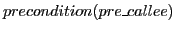 can violate the contract of callee.
The implementation of mechanism proved to be much simpler since CBMC already provides APIs like 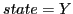 and 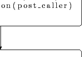. To verify contract violation within a function we had to replace all the callee preconditions with 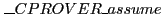 and the caller initiator with . It can be simply done by defining appropriate macro to replace during pre-processing stage of CBMC. When the CBMC starts processing the preconditions and postcondition, it assumes on initial function entry and asserts on every callee's precondition.
For second type of contract verification, we replaced preconditions with and post condition with . When CBMC starts processing a function it assumes all the preconditions and starts processing statements between precondition and postcondition. If assumption together with following operations violates the postcondition, violations are caught in .
The example shown in fig:example:typical:contract:programming, 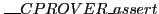 function is written to automatically open the door. It has preconditions for checking if the lock is not on and door is not opened already. The post condition checking door is open once the operations are performed. The CBMC tries to check contracts between caller and calee, it will make sure that caller satisfies the requirements before it calls the function. Also when the contacts are used to verify the functionality of a function, we can easily find any issues with post condition and invariants based on preconditions. Appending B presents some example runs.
ash 2012-09-13